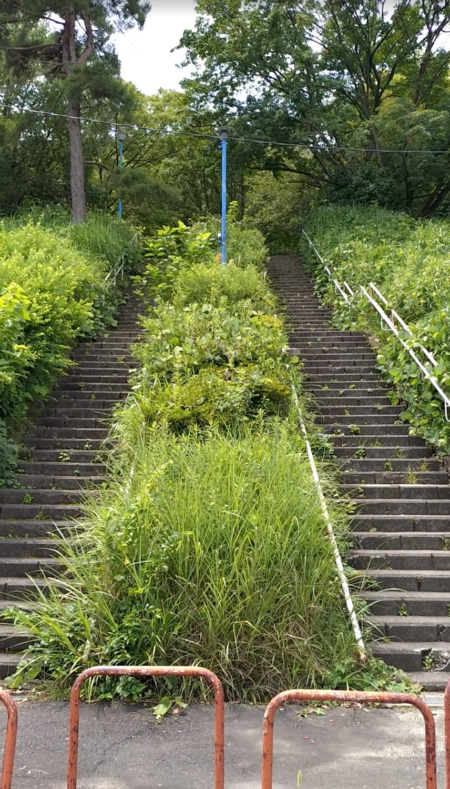
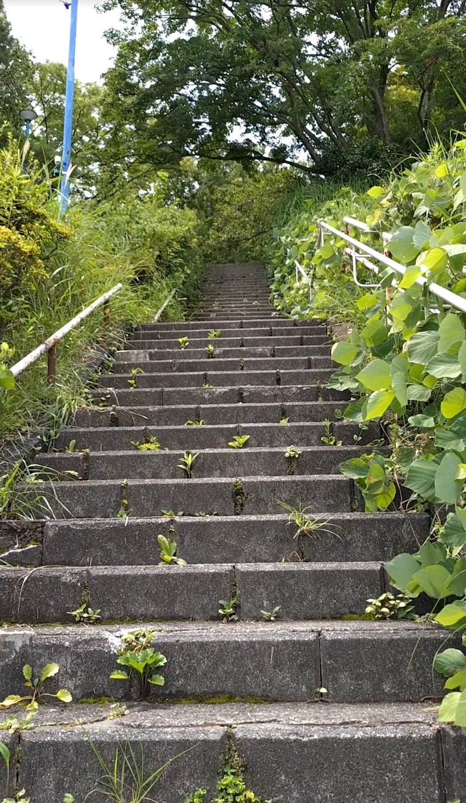
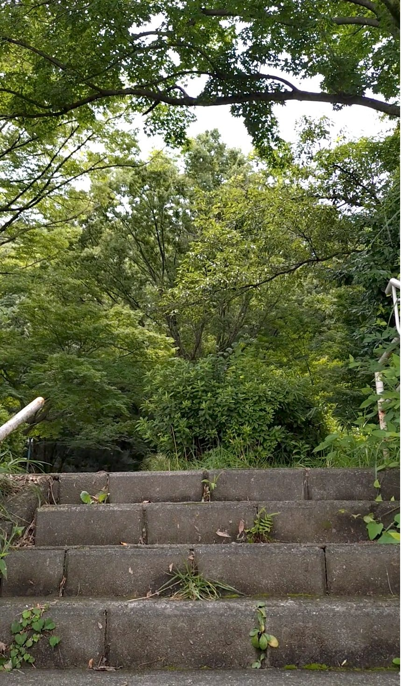
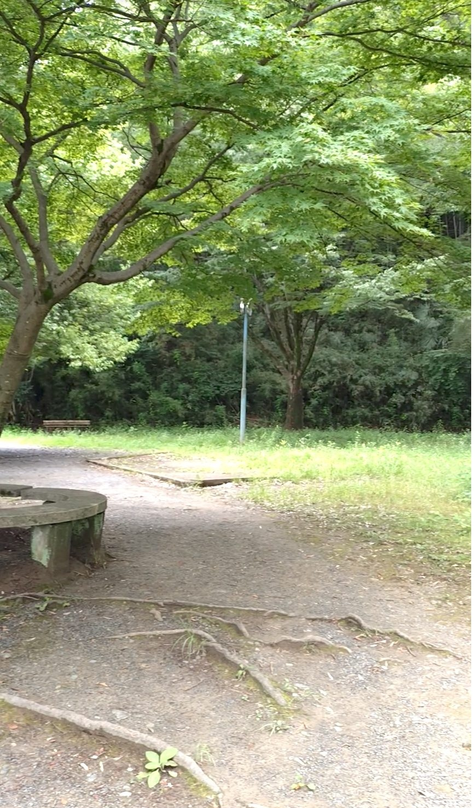
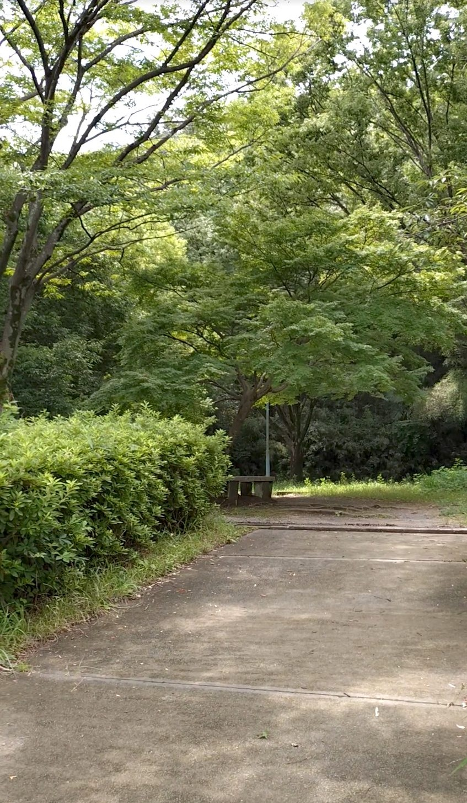
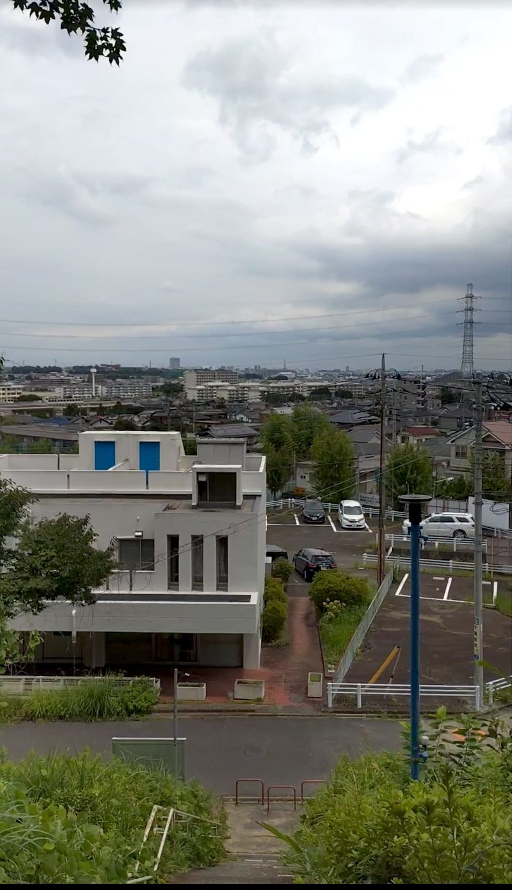

📅 2026年7月18日訪問
☀️ 晴れ、午前
⏱️ 登り1分
💰 無料
東京都日野市にある平山配水所そばの階段。今回登るのは、平山の町を見晴らす小高い場所にある「おくやま公園」へと通じる57段です。草木が生い茂り自然そのままに近い階段を抜けると、頂上には整備された緑豊かな公園と、平山の街並みを望む眺めが待っていました。
階段・石段スポット基本情報
アクセス
京王線「平山城址公園駅」下車、徒歩約15分。おくやま公園へ通じる階段が見えてきます。
注意点・持ち物
階段の周辺には草が生い茂っている箇所があります。歩きやすい靴でお越しください。夏場は虫よけの準備もあると安心です。
行ってみた
階段の下に到着しました。公園に通じる同じような階段が2つ並んでいます。階段の間や周辺には草が無造作に生えていて、階段が作られた当初はどんな様子だったのだろうと想像をかき立てられました。

登り始めます。草がたくさん生えていて、自然そのままの姿により近い場所なのだと感じさせてくれました。

頂上に近づくと、目の前が木や草でいっぱいに。ここはジャングルなのかと感じるほどでした。

頂上に着くと、そこは公園でした。緑いっぱいの雰囲気ながらも、しっかりと整備されている印象を受けます。

公園の中をもう少し進んでみます。こちらも緑に囲まれていて、心地よい雰囲気でした。

階段の頂上から階段を振り返ると、平山の街並みを望むことができました。高い建物があまりないため、遠くまで見渡すことができます。
